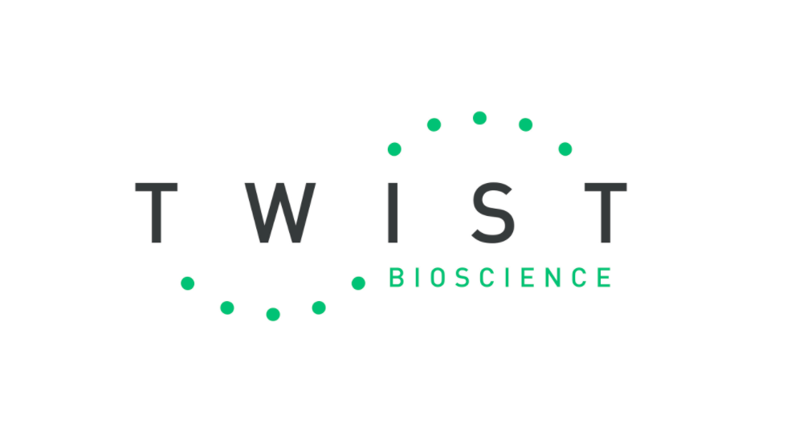

Attributions
ScrollWe’d like to thank everyone who helped us throughout our iGEM journey in 2021. Also, our special thanks to Acıbadem Mehmet Ali Aydınlar University for providing us all the facilities both during lab work and our meetings.
Our Dedicated Team
Dr. Zühtü Tanıl Kocagöz, Head of Acıbadem Department
of Medical Biotechnology, our Primary PI, provided us with
general support, project support and presentation coaching.
Asst. Prof. Erkan Mozioğlu, from Acıbadem Department
of Medical Biotechnology, our Secondary PI, provided us with
general support and specifically lab support.
Zeynep Çakır, high school student, worked in video
design, project presentation and social media management.
Arın Alanay, high school student, worked in project
presentation, lab work and human practices.
Yalın Kumru, high school student, worked in project
presentation, lab work and human practices.
Ceren Yurdakul, high school student, worked in
project presentation, human practices and public relations.
Azra Derin Şansal, high school student, worked in
project presentation and social media management.
Zeynep Alıcı, high school student, worked in project
presentation, human practices and public relations.
Roni Kolukısayan, high school student, worked in
wiki, graphics and video design.
Azra Yumrukçal, high school student, our artist,
worked in graphics and video design.
Our Sponsor
Acıbadem University supported us with lab access and meeting rooms for our weekly gatherings, generously provided us with financial support.
We gratefully acknowledge for synthetic DNA molecules from idt DNA Technologies.
We thank Twist Bioscience for supporting our project.
Pre-iGEM Training Members participated in a 3-day biosafety and laboratory techniques training program organized by iGEM Academy. In this program, team members received Biosafety and Basic Laboratory Techniques, iGEM Biosafety Policies, Introduction to Molecular Biology Laboratory and Recombinant DNA Technology courses.